Making outdoor advertising verifiable
Independent, on-ground proof for outdoor campaigns, captured by a distributed rider network.
The problem
Why verification was broken, and who could fix it
What is LocEarn?
LocEarn is a platform that connects brands running outdoor advertising campaigns with people on the ground who can verify those sites. Riders visit assigned locations, capture real-time proof, and get paid for verified submissions—giving brands visibility into what’s actually happening on the ground.
My role
I was the solo designer responsible for shaping the rider experience, from defining the core flow and product decisions to designing the product, validating it with riders, iterating the experience, and collaborating with the tech team through production.
The goal
The goal was to make campaign verification more reliable and scalable for brands. We wanted brands to get trustworthy proof from the ground and be able to spot issues while the campaign was still running, instead of finding out after the money was already spent.
Brands had no independent view of what was happening on-ground.
As a result, following problems occurred;
Vendor-controlled verification
The same vendors who owned the ad sites also handled monitoring.
Predictable inspections
Vendors knew when sites would be checked. They could prepare or alter them.
Lack of independent proof
Brands had no neutral way to verify what was actually happening.
How might we help brands get reliable, on-ground proof at scale?
The business needed independent verification of outdoor campaigns. Our challenge was to create a simple enough experience for riders to consistently find, complete, and submit verification tasks.
Jobs to be doneAs a brand
“I want independent, real-time proof that my campaigns are live, so I can take action if there are any issues.”
As a rider
“I want to find nearby tasks, know exactly what to do, complete them quickly and get paid without any hassle”
Who can verify sites without the vendor knowing?
We needed a solution where sites gets verified without the vendor (who owns the site) knowing it. But how? We needed independent verification that could scale city by city.
Use the vendor network
Vendors are the exact problem brands are trying to escape. Having them verify their own work defeats the purpose entirely.
Same trust problemHire field agents
Full-time staff covering every city would cost crores before a single brand signed on. Not viable at zero revenue.
Too expensivePartner with delivery companies
We thought of partnering with delivery companies, but it would make us dependent on third-party contracts, availability windows, and pricing. Too slow to scale.
Not scalableEveryday people – incentivised with money
Thousands already move through these cities daily. They just needed a reason to stop and look. We created that reason.
We chose this · 400+ riders onboarded via Instagram & Facebook adsThe first version
Earning trust, building V1, and hearing what riders said
The product had to earn trust before asking for effort
A rider had never heard of LocEarn. Before asking them to spend their time, we had to make the offer feel credible and worth their effort.
Show value before commitment
“Why should I trust this?”
Help riders quickly understand what LocEarn is, how it works and what they can earn.
Transparent value
“Is this actually worth my time?”
Before booking, riders could clearly see the reward, location and task details with no hidden surprises.
Confident first task
“Can I actually do this?”
Show key details like reward, distance and site before they commit.
Proof through payout
“Will I actually get paid?”
Weekly payouts create the first real proof that the platform is genuine.
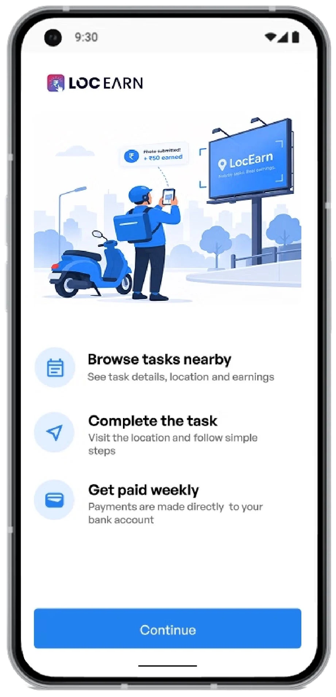
Same proof engine, different users
We chose to use our existing product’s photo verification feature into Locearn. Our job wasn’t building the proof system. It was making it work for people who just saw an Instagram ad.
Same proof engine but for different users
Right place
GPS confirms the photo was taken at the exact contracted site
Right time
Timestamped at capture. No backdating.
Can't be staged
Gallery upload blocked. You show up or you don't submit.
Built fast, then put in front of riders
We built V1 quickly — then put it in front of riders.
We went straight into high-fidelity to align stakeholders around the product direction. Their feedback exposed gaps we couldn’t see from the screens alone.
We designed the core rider journey in high fidelity:
Then we tested the prototype with riders from our existing network in the office.
Key design decisionsWe designed around three things riders need to know.
How do I get there?
Show the right action at the right time with clear arrival time and easy access to maps.
Makes the task easier to complete, especially on the move.
What do I need to do?
Guide riders through a simple, step-by-step flow to capture proof and complete the task.
Reduces guesswork and speeds up decision-making.
Is it worth it?
Show the reward and distance upfront, so riders can quickly decide if a task is worth their time and travel.
Faster decisions with less uncertainty.
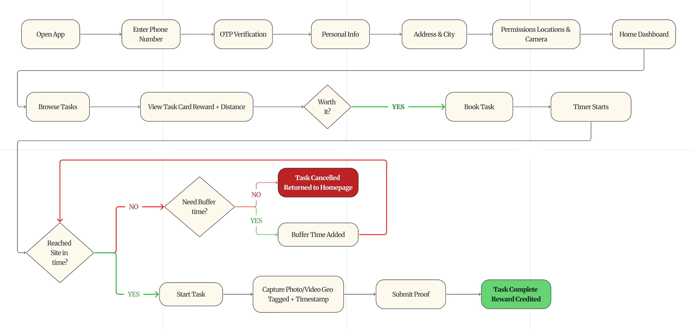
We had to design within a few non-negotiables. These constraints shaped what we could change and helped us focus on what would create the most impact for riders.
Proof had to be trustworthy.
Location, timestamp and live capture were already part of the system.
Riders are often on the move.
They could be travelling to a site, checking the app in between.
Every task has a deadline.
Riders needed to reach the site within the allotted time.
Trust starts before the first task.
New riders are spending their time and fuel before they know if it’s worth it.
The challenge was to make the flow easier to use while the riders are on the move.
Four friction points in the rider journey
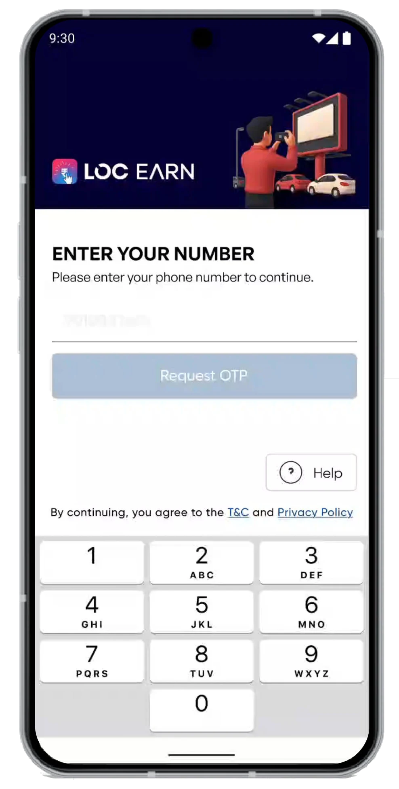
“ltna personal information kyun chahiye?”
Why do you need so much personal information?“Preferred cities aur permissions abhi kyun select karna hai? Pehle kaam dekhne do.”
Why do I have to select preferred cities and give permissions now? Let me see the tasks first.“OTP aane mein bahut time lag raha hai.”
The OTP is taking too long to arrive.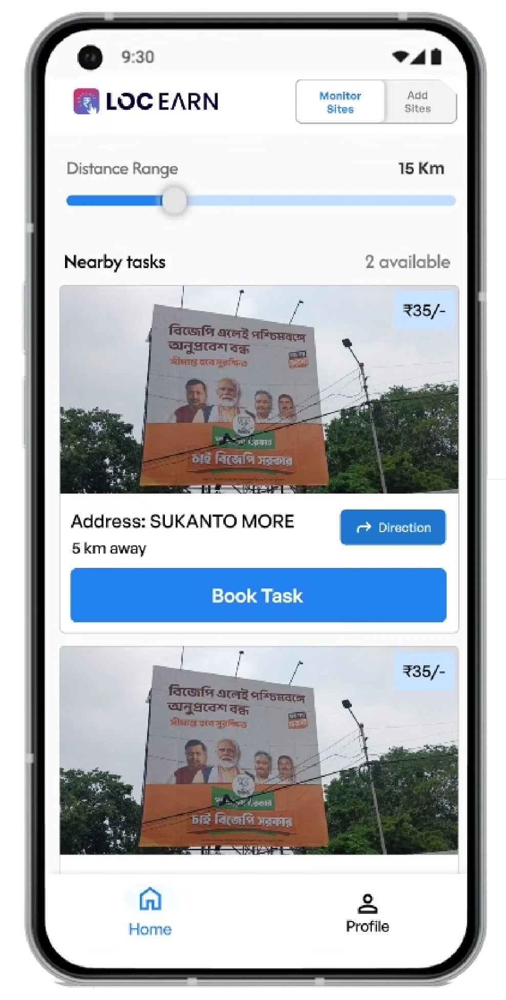
“Pehle direction loon ya task book karoon?”
Should I check the direction first or book the task?“Mujhe bas paas ke tasks dekhne hain, range samajhna thoda confusing hai.”
I just want nearby tasks; the range is a little confusing.“Iss page pe direction kyu dikha rahe? Aur dono buttons ka color bhi same hai.”
Why are directions shown on this page? Both buttons are the same colour too.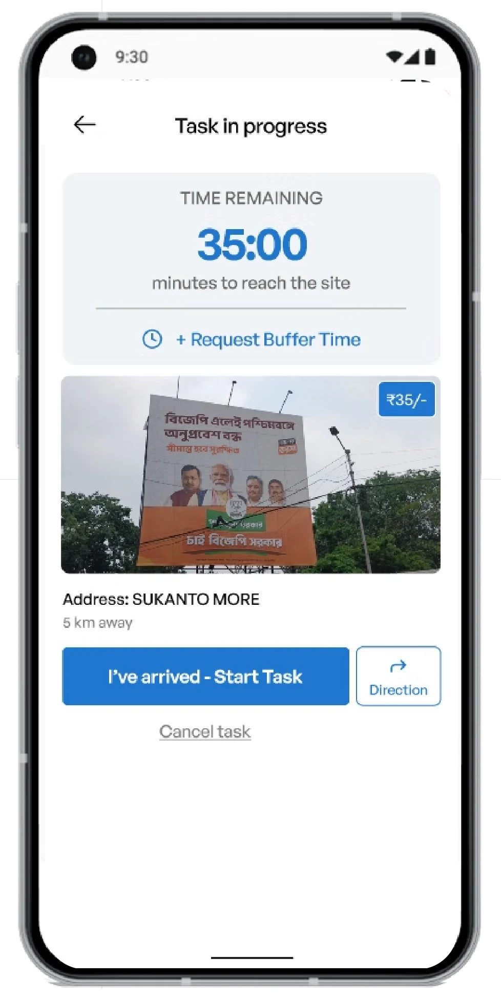
“Abhi mujhe kya karna hai? Direction loon ya task start karoon?”
I'm not sure what I'm supposed to do now. Should I get directions or start the task?“35 minute bache hain, par mujhe kitne baje tak site pe pahunchna hai?”
It says 35 minutes remaining, but by what time do I need to reach the site?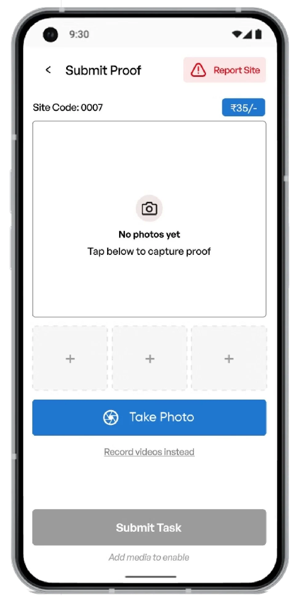
Riders needed a clearer way to capture proof.
“Photo lene ke liye exactly kahaan tap karna hai?”
Where exactly do I tap to take the photo?“Mujhe bas site ki photo leni hai, itna sab kyun dikh raha hai?”
I just need to take the site photo, why is there so much on the screen?“Report site bhi tha kya, mujhe toh dikha hi nahi.”
I totally missed that there is a 'Report Site' option.The feedback revealed four friction points in the rider journey.
Unclear time expectations
Countdown didn’t answer “when do I need to arrive?”
Unclear next action
Riders weren’t sure what to do next
Proof & reporting felt disconnected
Capture and reporting actions competed for attention
Onboarding asked too much
Too much information before seeing tasks
The fix and the result
What changed, what shipped, and what I would do next
From more information to one action at a time
Let riders see the value before asking for commitment.
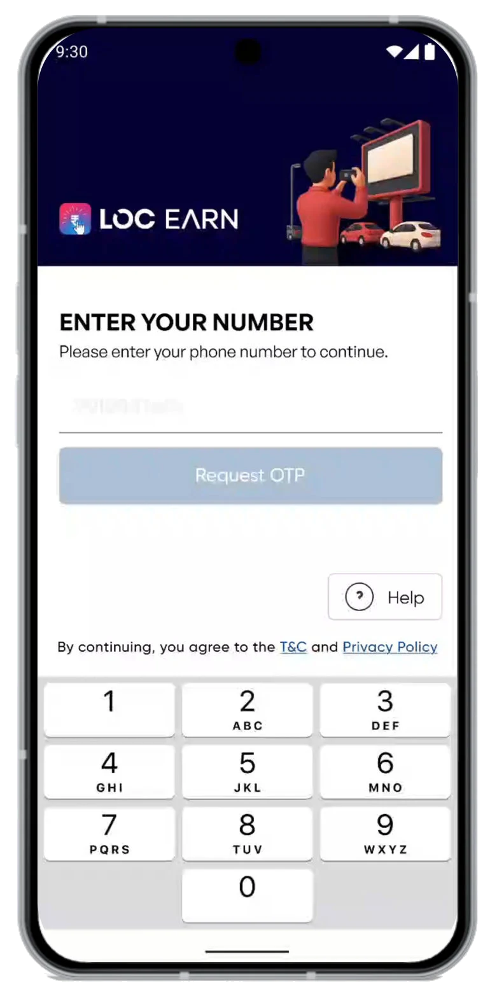
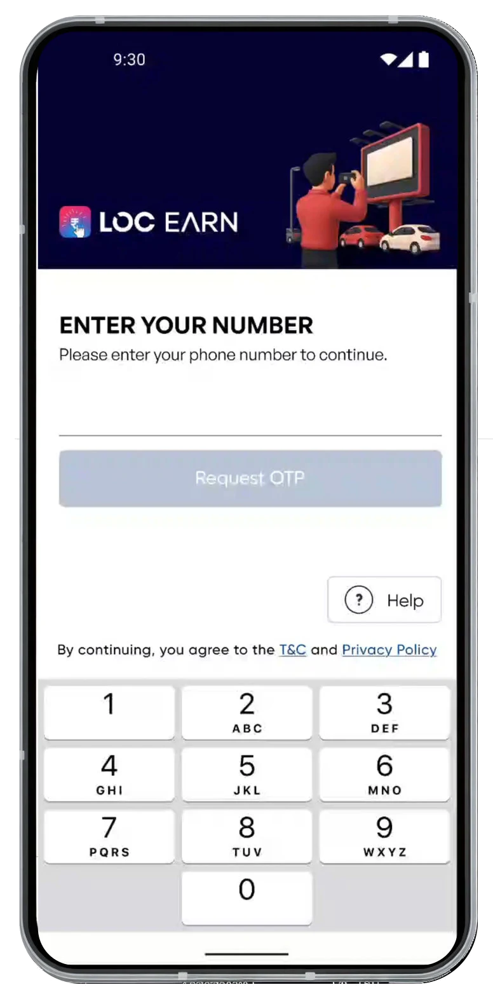
Drag to compare
Make the decision easier before the rider starts travelling.
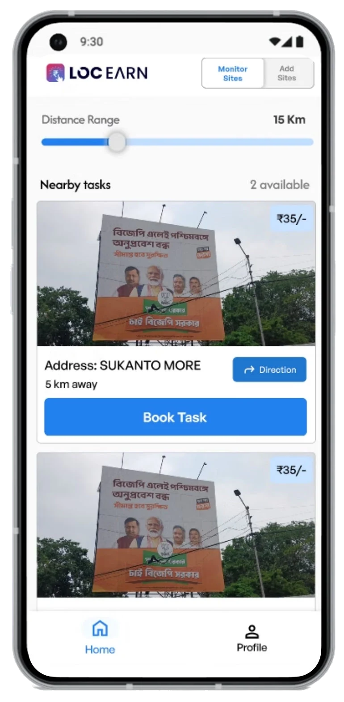
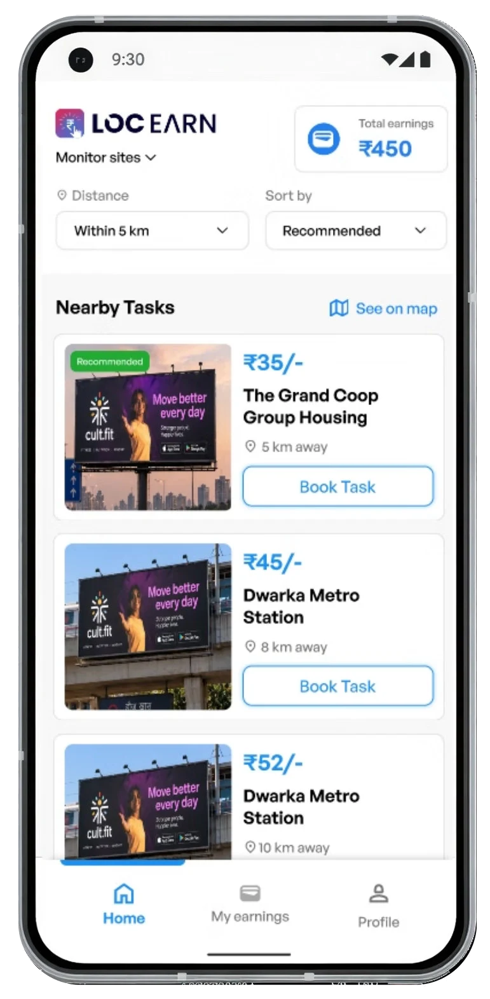
Drag to compare
The action changed with the rider’s state.
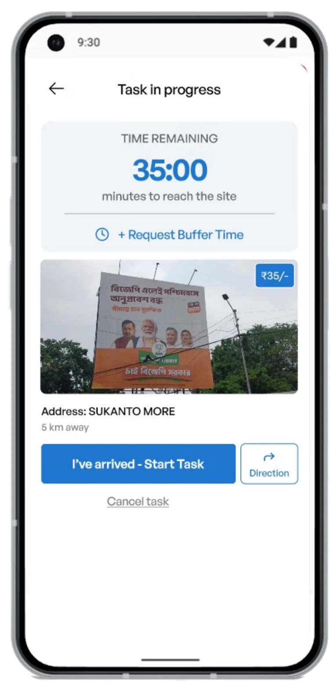
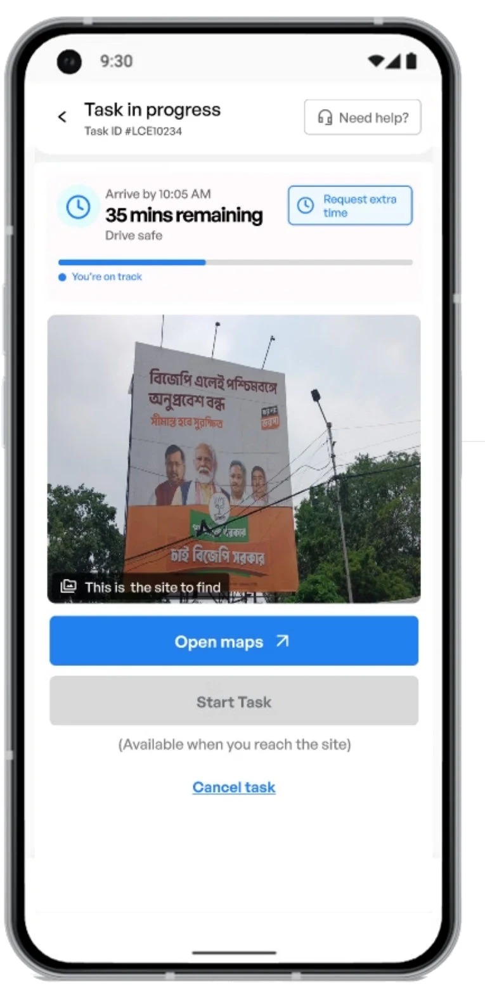
Drag to compare
Make the proof submission flow easier to follow.
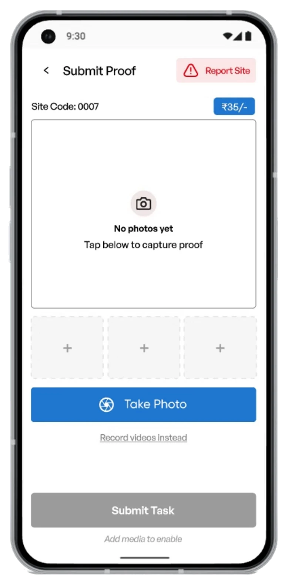
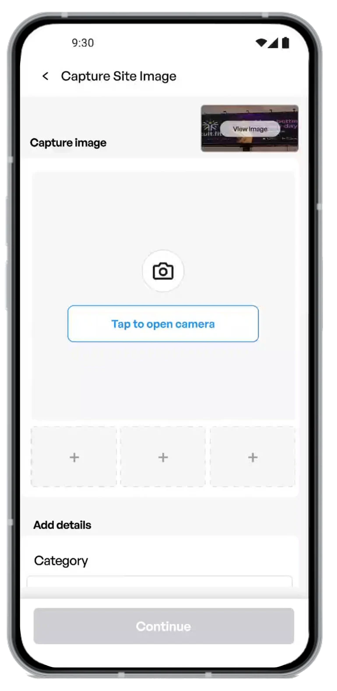
Drag to compare
The shipped rider journey
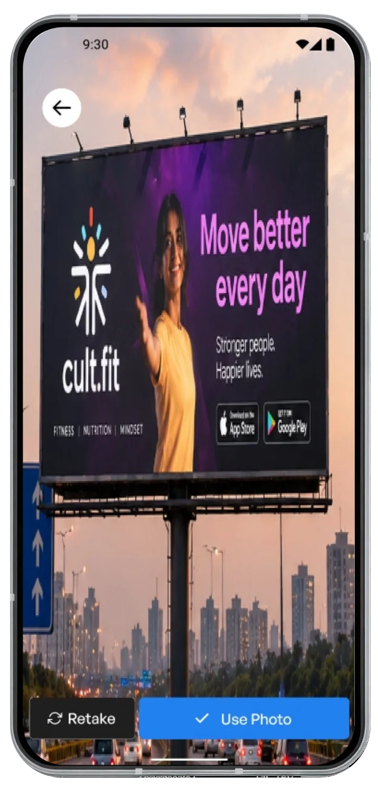
Beta to real-world deployment
The product launched in beta across Delhi NCR before expanding the rider model to West Bengal. Expansion into West Bengal was affected by the state election, which disrupted the planned rollout window.
The beta moved from prototype to real-world deployment.
Riders deployed
Recruited through social ads and onboarded one by one.
Districts covered
Built a distributed rider network across the campaign area.
Sites monitored
Brands received independent, on-ground verification.
The redesigned rider experience enabled on-ground verification at scale, giving brands an independent way to collect campaign proof.
What I'd do differently
The V2 solved the problems we could see. These are the gaps I’d address next.
Design location edge cases earlier
V2 made “Start Task” dependent on reaching the site. The next iteration should define what happens when GPS is inaccurate, unavailable, or the rider reaches the site but isn’t detected.
Take testing into the rider's context
Office-based prototype reviews helped us uncover major usability issues. The next iteration should test the experience while riders are actually travelling, navigating and completing a task.
Define success metrics before iterating
We used rider feedback to drive V2, but didn’t instrument the V1 → V2 change. Next time, I’d define metrics such as time to first task, task completion and onboarding completion before rollout.